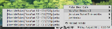
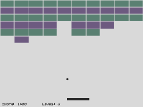
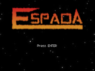
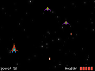

About Me
Oh hi, my name is Justin. I enjoy programming in C and C++, and have lately been spending my time contributing to Clint Bellanger's action-rpg, Flare. I've also done some stuff for the Flare-based LPC entry, Laurelia's Polymorphable Citizens.
Aside from those projects, this page is for showcasing small programs I've written (all of which are hosted on my Github), along with some bash scripts.
Also, I like Japanese anime and manga. If you're interested, I keep track of the anime I've watched on MyAnimeList.
Feedreader
{kind=link}
This is a really simple RSS feed reader made with C and GTK2 that sits in the system tray. Clicking on an article will open it with xdg-open (this can be changed in util.h).
Block Breaker
{kind=link}
A breakout clone that I made with C and SDL. I wanted to try out the primitives in SDL_gfx, and this made a nice test project for that purpose.
Controls (ingame):
Arrow keys = Move paddle left/right
Space = Launch ball
ESC = Quit
Espada
 {kind=link}
{kind=link}
This is a simple space shooter that I made with C and SDL. It's not complete yet, but it's certainly playable.
Controls (main menu):
Arrow keys = Move cursor vertically / Increase & decrease settings
Z = Accept selection
Controls (ingame):
Arrow keys = Movement
Z = Fire
P or ESC = Pause
Scripts
Newsbeuter Notifier - This is a short script that reloads newsbeuter, and then displays a desktop notification (using notify-send) if there are unread articles. I have this set to run every 10 minutes in my crontab.
Image Downloader - This script will download a web page and save all of the linked images. Great for imageboards.
{kind=link}
{kind=link}
{kind=link}